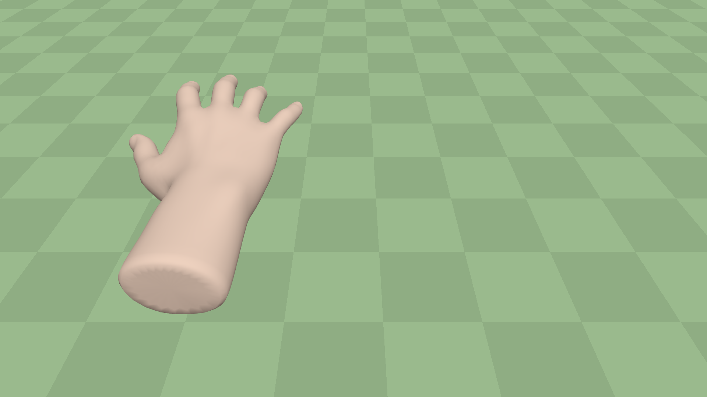
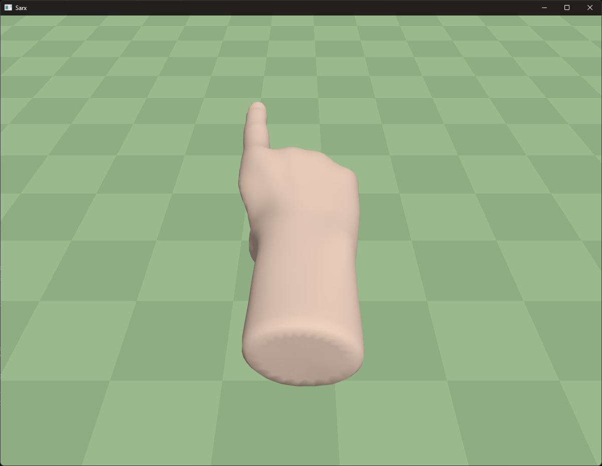

Finally, after more than a month, I have a full vertical slice of the game that I can start fleshing out. I really chose to do this the long way! And part of me wants to take what I have learnt as a win, and just start using an engine. However, I know there is still a TON more to learn in terms of graphics engines.
This vertical slice did wonders for me finally understanding the individual pieces of the code I had written so far. The render module, Amaterasu, finally makes sense to me! I have written that boilerplate out at least four times now, but always to render triangles or cubes or some other crap. Now, there is some actual comparisons between the hand and the ground as well as between initialisation and drawing, that I finally have a clear picture in my head of what this pipeline is and what is involved therein.
Still a few pieces to consolidate, which is vital if I am to clean up the code as it stands and make an actual rendering module! What we have now is very much a "Hello, Hand" project!
Next up is getting the poses - that I got working in Blender - to work here. That means building SKINNING? Whatever that means. We'll see how well buddy Claude can explain it, and what the code reveals!

The hand above the checkered ground: the vertical slice.
GTA VI came out today! Not sure much work will be done ;) That RAGE engine really is a marvel!
Alas, quiet a bit of work was done!! I most certainly don't fully understand the skinning kak I just wrote. Buddy Claude did his best to explain it, and I understand enough to push forward.
Did some other research and discovered that my stages through which I am reading my models should be optimised. .glb parsing is heavy work, and while we are only doing the hand right now, we are certainly doing more models going forward. Tons more!
So, it seems we'll need an intermediate step to turn our .glb files into some other processed format that makes runtime parsing SUPER FAST.
There is clearly a strong advantage to understanding the model layout in a file and parsing. Might be worth proper deep dive into all these nuances.
Alas, the hand has made good progress today! It moves, albeit not as I envisioned! We'll polish that out tomorrow

The hand bent by its bones: the first skinned pose.
The animation of the hand is first-attempt slop, for sure. I had to distinguish between idle animation poses and action poses. The action poses were far too slow to transition, so I sped them up. This made the idle animation super weird because the hand switched between various idle positions far too quickly.
I almost reached for Claude to make the edit, but AI is the one who gave me those initial values, no doubt as a best guess. And despite my win from yesterday, I needed so much help from AI to get the skinning working that it was hard to feel ownership of the code.
I refuse to let this codebase become akin to vibe coded kak. So, throwing prompts at Claude and asking it to calibrate something that needs a human eye is exactly the kind of mistake that will lead me down that road.
As such, my challenge today is to improve the skinning and the animations without any help from AI. Buddy Claude can fix the docs and tests when I am done!
I've found that our system is currently not expressive (or general?) enough to tweak the animations quite how we want them. The system itself either needs a signature change, or the underlying component data needs transition logic attached.
The issue is that we are trying to express two different types of animation transitions with one unflexible posing system. An action pose, and an idle pose. I assume that going forward, many different animations are going to want their own means of rotation. Some might be need fixed transitions and others might need interpolation. I am confident that we can express that in a single system, so that means our underlying data needs a means of expressing transitions!
Not only that, but I see now that the ComponentVec struct I defined in Enki is not sufficient to store bone data. That is to say that the struct was designed with n dimensional data in mind. Position, Velocity, Health etc...
Bones are represented as Quats, which are a 4D value. But, a single entity has many bones. Having followed the guidance of buddy Claude yesterday, I have ended up with a ComponentVec holding a series of Rust Vecs. How annoying! I might as well be back in Java with this scattered memory approach!
And so, it seems we need a second type of 'column' in our ECS system. One that can hold an unknown number of n dimensional values, like a list of bone rotations. Back to unsafe Rust, gulp!